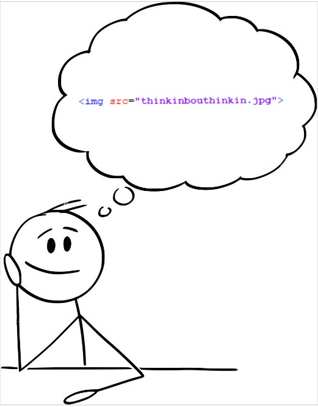

Think this was Lecture 05 - on div and span elements
Learnt about div tags and span tags as well.
Hopefully I'm learning something about it...
The div tags are used for block content- meaning that it must be on a line on its own
(unless there's a span tag)
- which now roughly translates to the current flow content. Whereas the span tags are for in-line content, now roughly equating to the phrasing content.
Something on semantic elements - Lecture 06 if I had to guess
Semantic means something that adds to something else to ADD more informaion or logic...
Also learnt about the article element.
ALSO learnt about the section element, and now have formatted eveything to include sections to make HTML neater and more presentable.
Different kinds of lists - Lecture 7
For unordered lists, you must use the ul tag(just means Unordered List), and for everything you put inside of it, you add the li tag.
So, for example, here are the reasons why you should join the course I've enrolled in:
Its free
It's a step-by-step process for all beginners in:
Hyper-Text Markup Language
Cascading Style Sheets
JavaScript
It has good reviews...
You can also make ordered lists with the ol tag. It's basically the same formatting and code like the unordered lists, but it puts stuff in a specific ORDER(1, 2, 3, etc.). Don't forget to put the li tag within...
Probably lecture 8 because the last thing I did was lecture 7 - HTML character entity references
Also found out about character reference to wrap text together (essentially meaning that the words will always stay together even if you shrink the page). Could use this to link words with special meaning together. In order to do so, take away the space between the words and add "& n b s p ;".
Lecture 9 - on creating links (its TOO much)
So I learnt how to make links to various places - and it still hurts my mind thinking about it.
You can:
Link to other pages wthin the same site (internal links)
Link to other websites (external links)
Link to sections withing the same document
To link, you need to use the a element (meaning anchor) with the href attribute and an equals sign next to it. Then add speech marks and put the name of the file or external website url within the speech marks (e.g. example.html, or https:example.com).
Also by putting the title attribute, you can display some text when you hover over the linklike this. If you were wondering what that link is to, its just the GitHub page for all the resources shown within the course.
Somehow, I unexpectedly learnt the use of the id attribute, which is unique for each tag, and that is literally the reason for its existence...
To link to sections within the same document, all of the sections you want to link to must have a unique id attribute. DO THAT FIRST. Then, instead of links within the href attribute, add a # and then immediately follow with the id. And voilà, it should work.
Someone told me that links are like building bridges ;)
Completely forget about this. But then again, I just rememebred. To force the browser to open the link on a new tab, use the target attribute, and add "_blank".
Following this lesson, I've gone and made a contents section with links to all of the sections within the document relating to the different topics. Also added a "back to top" link at the bottom.
Images... Almost done with the basics - lecture 10
So basically as the title says, it's just adding images.
For that to happen, use img tag (no closing tag needed) then add the src attribute, and then the name of the image file or image link (both work).
Also he recommended to specify dimensions through the height and width attributes (lengths are in pixels... not mm or cm!).
This is basically how you do it:

Can also add alt attribute for the "visually impaired"... If they were visually impaired, they wouldn't be able to see it in the first place!